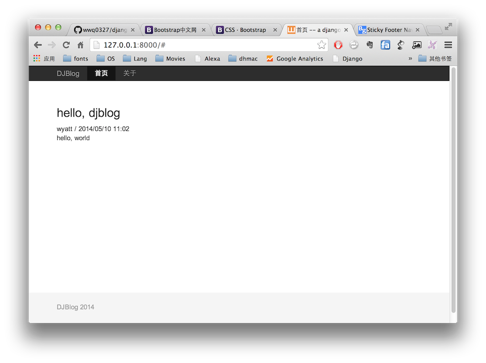

Django的模版，其实就是带有一些Django模版规则的HTML文本。模版的存放位置，可以在每个应用下面建一个templates目录，模版就存放在这个目录中，这是一种分散的管理方式，另外一种，就是采用统一的管理方式，建在应用目录中建一个templates目录，然后每个应用一个目录，如本项目目录结构：
$ tree templates/
templates/
├── base.html
└── blog
├── index.html
└── post.html
1 directory, 3 files
我们通常将网站的主模版命令为
base.html，其它的模板就可以引用它。
项目地址：http://todc.github.io/todc-bootstrap/getting-started/
这是一个Google风格的Bootstrap。
简洁、直观、强悍、移动设备优先的前端开发框架，让web开发更迅速、简单。
在本节开始的settings.py设置一节中，我们设置好了静态文件的存放路径为./static/，这里下载todc-bootstrap代码到本地，解存后，复制到static目录中，结构是这样的：
$ tree static/
static/
├── css
│ └── main.css
└── todc-bootstrap
├── css
│ ├── bootstrap-theme.css
│ ├── bootstrap-theme.css.map
│ ├── bootstrap-theme.min.css
│ ├── bootstrap.css
│ ├── bootstrap.css.map
│ ├── bootstrap.min.css
│ ├── todc-bootstrap.css
│ ├── todc-bootstrap.css.map
│ └── todc-bootstrap.min.css
├── fonts
│ ├── glyphicons-halflings-regular.eot
│ ├── glyphicons-halflings-regular.svg
│ ├── glyphicons-halflings-regular.ttf
│ └── glyphicons-halflings-regular.woff
├── img
│ └── checkmark.png
└── js
├── bootstrap.js
└── bootstrap.min.js
6 directories, 17 files
代码包中准备好了CSS，JS及一些字体，我们可以拿来直接使用即可。同时我们还创建了一个css目录，需要用来存放我们自己添回的CSS代码。
我们不打算从头创建这个文件，而是直接在todc-bootstrap项目中找到示例页面，然后适当修改：
http://todc.github.io/todc-bootstrap/getting-started/#examples
选择中模版之后，你可以浏览源码，然后将HTML代码复制过来，这里我选中的是一款名为Sticky footer with navbar的模版，你可以根据自己的喜好选择。拿来这个代码之后，我们还暂时没法使用，需要作些修改：
<!-- Bootstrap core CSS -->
<link href="{{ STATIC_URL }}todc-bootstrap/css/bootstrap.min.css" rel="stylesheet">
<!-- TODC Bootstrap core CSS -->
<link href="{{ STATIC_URL }}todc-bootstrap/css/todc-bootstrap.min.css" rel="stylesheet">
<!-- Custom styles for this template -->
<link href="{{ STATIC_URL }}css/main.css" rel="stylesheet">
<title></title>这个内容，我们修改成<title>{% block title %}{% endblock %} -- a django blog</title>，二是将<div class="container"></div>中的内容全部删除，添加上{% block content %}{% endblock %}。col-lg-9和col-lg-3将页面分成9:3的两个部份。一个用于主要内容显示，一部份作为右侧边栏。最后的HTML代码是这样的：
<!DOCTYPE html>
<html lang="en">
<head>
<meta charset="utf-8">
<meta http-equiv="X-UA-Compatible" content="IE=edge">
<meta name="viewport" content="width=device-width, initial-scale=1">
<meta name="description" content="">
<meta name="author" content="">
<title>{% block title %}{% endblock %} -- a django blog</title>
<!-- Bootstrap core CSS -->
<link href="{{ STATIC_URL }}todc-bootstrap/css/bootstrap.min.css" rel="stylesheet">
<!-- TODC Bootstrap core CSS -->
<link href="{{ STATIC_URL }}todc-bootstrap/css/todc-bootstrap.min.css" rel="stylesheet">
<!-- Custom styles for this template -->
<link href="{{ STATIC_URL }}css/main.css" rel="stylesheet">
<!-- Just for debugging purposes. Don't actually copy this line! -->
<!--[if lt IE 9]><script src="../../assets/js/ie8-responsive-file-warning.js"></script><![endif]-->
<!-- HTML5 shim and Respond.js IE8 support of HTML5 elements and media queries -->
<!--[if lt IE 9]>
<script src="https://oss.maxcdn.com/libs/html5shiv/3.7.0/html5shiv.js"></script>
<script src="https://oss.maxcdn.com/libs/respond.js/1.4.2/respond.min.js"></script>
<![endif]-->
</head>
<body>
<!-- Wrap all page content here -->
<div id="wrap">
<!-- Fixed navbar -->
<div class="navbar navbar-default navbar-fixed-top" role="navigation">
<div class="container">
<div class="navbar-header">
<button type="button" class="navbar-toggle" data-toggle="collapse" data-target=".navbar-collapse">
<span class="sr-only">Toggle navigation</span>
<span class="icon-bar"></span>
<span class="icon-bar"></span>
<span class="icon-bar"></span>
</button>
<a class="navbar-brand" href="#">DJBlog</a>
</div>
<div class="collapse navbar-collapse">
<ul class="nav navbar-nav">
<li class="active"><a href="/">首页</a></li>
<li><a href="#about">关于</a></li>
</ul>
</div><!--/.nav-collapse -->
</div>
</div>
<!-- Begin page content -->
<div class="container">
<div class="row">
<div class="col-lg-9">
{% block content %}{% endblock %}
</div>
<div class="col-lg-3">
{% block rightside %}{% endblock %}
</div>
</div>
</div>
</div>
<div id="footer">
<div class="container">
<p class="text-muted">DJBlog 2014</p>
</div>
</div>
<!-- Bootstrap core JavaScript
================================================== -->
<!-- Placed at the end of the document so the pages load faster -->
<script src="https://ajax.googleapis.com/ajax/libs/jquery/1.11.0/jquery.min.js"></script>
<script src="{{ STATIC_URL }}todc-bootstrap/js/bootstrap.min.js"></script>
</body>
</html>
当base.html这个基本模版创建好之后，我们其它的Django 模版就可以直接引用它了:
{% extends "base.html" %}
{% block title %}首页{% endblock %}
{% block content %}
{% for post in posts %}
<div class="post">
<h3>{{ post.title }}</h3>
<div class="info">{{ post.author.username }} / {{ post.pub_data|date:"Y/m/d H:i" }}</div>
<div class="content">{{ post.content }}</div>
</div>
{% endfor %}
{% endblock %}
启动开发服务器：
./manage.py runserver
我们看到下面的结果：

我们放面已加入了一条记录，所以这里我们看到的页面是这个样子的。
blog/post.html模块我们可以看到，对于Post模块来说，内容部份也是一样的，所以我们可以把blog/index.html的内容部份抽出来，做成一个单独的模版文件，再将这个内容分类include到个模块中来。
## blog/_post.html
<div class="post">
<h3><a href="{{ post.get_absolute_url }}">{{ post.title }}</a></h3>
<div class="info">{{ post.author.username }} / {{ post.pub_data|date:"Y/m/d H:i" }}</div>
<div class="content">{{ post.content }}</div>
</div>
然后，修改一下blog/index.html:
{% extends "base.html" %}
{% block title %}首页{% endblock %}
{% block content %}
{% for post in posts %}
{% include "blog/_post.html" %}
{% endfor %}
{% endblock %}
对于blog/post.html的修改方式类似，代码如下：
{% extends "base.html" %}
{% block title %}{{ post.title }}{% endblock %}
{% block content %}
{% include "blog/_post.html" %}
{% endblock %}